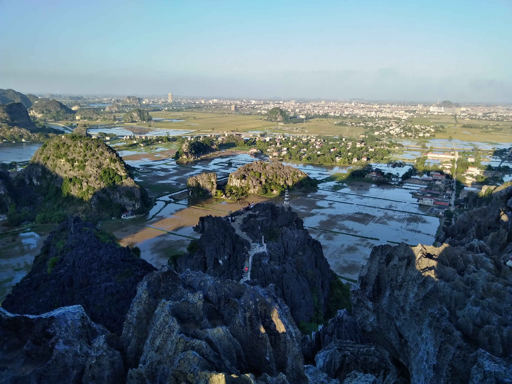
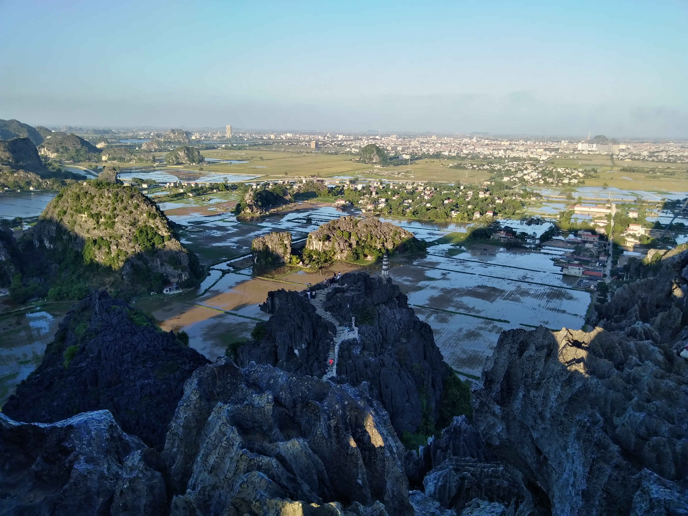

La baie d'Halong et sa soeur Ninh Binh
Un paysage mystique... et touristique
La baie d'Halong
Depuis Hanoï nous cherchons une croisière pour la fameuse baie d'Halong. Ce n'est pas une mince affaire. L'offre est pléthorique et les arnaques nombreuses. On nous avait déjà conseillé d'y mettre un certain prix, les offres les moins chères semblent être les pires expériences. Nous jettons notre dévolu sur une offre qui est dans la gamme de prix classique, pour faire le tour classique des touristes, avec une nuit dans la baie. On rêve tous de pouvoir le faire hors des sentiers battus, dans des conditions optimales, etc. Mais faut pas se leurrer, la baie recevant plusieurs milliers de touristes par jour, c'est pas bien simple. Et encore moins depuis Hanoï.
Nous voilà donc partis sur la route bien tracée du tourisme de masse, malheureusement, mais la baie d'Halong en soi est formidable. Le paysage est incroyable et à mesure que nous avançons, les rochers se découpent sur plusieurs plans, tels les serpentins du dragon de la légende. Nous commençons par la grotte du singe, où il n'y a pas de singe. Enfin, pas de singe vivant, mais des formes de singes semblent se dessiner dans les ombres des stalactiques. L'effet n'est pas dingue, même si on devine effectivement les singes, mais la grotte est étonnament grande pour un trou dans un cailloux de cette baie. Surtout c'est le passage obligé de toutes les croisières de la baie, et on est donc en file indienne comme des moutons. Ensuite c'est l'île de Titop (du nom de l'astronaute soviétique Gherman Stepanovich Titov), où l'on a une vue sur l'ensemble de la baie. Là encore, passage obligé des touristes, on se retrouve en file indienne sur le chemin. La vue vaut le détour, et on se rend compte du nombre de personne passant dans le coin. Une vraie armada de bateau de croisière.
Ensuite nous jettons l'encre dans une petit coin de baie, et on passe la soirée à jouer aux cartes avec les deux françaises de Carca, Camille et Gaëlle, qu'on a rencontré sur la croisière, avec qui on partage ce p'tit bout d'aventure. Et une petite partie de pêche au calamar qui nous aura value quelques coup de stress, mais sans aucune prise :(.
Le lendemain on est parti pour une petite virée en canöé, un petit moment sympa où on profite vraiment de la baie, dans une ambiance tranquille et plus solitaire. Mais c'est aussi l'endroit où on voit le plus de détritus dans l'eau, les courants charriants un peu tout par ici.
Dernier repas bien garni sur le retour, et on débarque à Halong direction Ninh Binh, sa petite soeur terreste.
Sylvain
Ninh Binh
C'est donc mon tour de vous raconter Ninh Binh. Alors déja, l'arrivée, ona eu du pot. Le bus propose deux arrêts : un à Tam Coc (la ville faite pour les touristes avec plus un pet d'authenticité), et un à Ninh Binh. Pour nous les deux c'était kifkif, mais après moulte délibérations, on se décide à descendre au premier et surprise, notre sac est déja hors du bus. Note à nous mêmes, les sacs peuvent vraiment descendre du bus sans notre accord.
On arrive après 12 km de taxi à notre hôtel : Tom's Hostel, qui est un peu paumé dans un petit village de cette belle zone. Très chouette, l'oncle du propriétaire nous propose de partager son repas. Nous essayons d'engager la conversation, mais on est très vite limités par notre niveau de vietnamien et son niveau d'anglais.
Le lendemain, nous empruntons deux vélos à l'auberge. On fait un bon kilomètre, un très beau paysage se dessine et justifie une photo, je freine, et mon guidon se casse net en deux. Okay... On repart dans l'autre sens pour ramener le vélo. On repart avec un nouveau vélo, et on a même pas pu dépasser le point précédent, et paf, ma roue est crevée. Retour à la case départ, la troisième sera la bonne !
On pédale donc gaiement à travers ces magnifiques paysages de montagnes karstiques. Au programme : faire un tour de barque sur les cours d'eau qui passent à Trang An. Ca a l'air pas mal touristique, mais Tom, le gars de notre auberge, nous a dit de faire le circuit 2. On achète nos billets, des dizaines et dizaines de barques avec leurs rameurs nous attendent. Il faut être quatre, nous trouvons donc un autre petit couple de français en long voyage autour de notre belle planète pour nous accompagner.
La ballade dure environ trois heures, avec des stops sur différents spots (pas facile à dire!). C'est tiptop ! On passe donc au milieu de ces fabuleuses montagnes. On y verra des temples et des gens qui ronflent autour, le décor du film kingkong que personne n'a vu sur cette barque et de superbes grottes. Des grottes qu'on ne remarque pas tout de suite, c'est juste un trou dans la falaise ou l'eau passe. Et la rameuse nous fait signe de nous baisser et on y passe pendant parfois une bonne centaine de mètres. On se sent parfois seuls au monde à voir ces paysages défiler au rythme de l'eau. Un très belle expérience.
On se remet ensuite à pédaler à travers plein de petits villages bien sympas, et pas trop dénaturés par le tourisme de masse. Et on arrive à Hang Mua pour faire une belle ascension de quelques 450 marches pour aller observer un superbe coucher de soleil sur un superbe paysage... de montagnes karstiques !
Le soir en rentrant, l'hôtel est en effervescence et tout le monde s'agite pour cuisiner. On se retrousse donc les manches et c'est parti ! Riz, Tofu, nems, légumes : la crème de la gastronomie vietnamienne ! On partage et on rencontre plein de profils différents de voyageurs ainsi que nos hôtes, Tom, son frère et son oncle.
Le lendemain, retour sur le petit vélo pour aller à Bai Dinh, la plus grande pagode vietnamienne, rien que ça !
Puis direction le bus et Sapa, la dernière ville étape avant de traverser la frontière... ou pas ! La suite au prochain épisode.
Bientôt Sapa et ses ethnies, j'ai hâte
Pipoca


 



 <\div>
<\div>